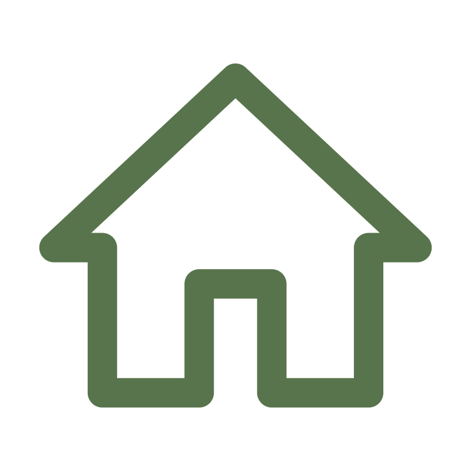

CUIDADO QUE TRANSFORMA
Castrar é
um ato de amor
Promovemos saúde, bem-estar e qualidade
de vida para cães e gatos através da
castração e recuperação responsável.

Prevenção
Evite doenças e comportamentos indesejados.

Recuperação
Acolhemos e cuidamos de animais que precisam de uma nova chance.

Cuidado responsável
Promovemos a castração como um ato de amor e responsabilidade.

Impacto social
Trabalhamos por uma comunidade mais consciente e solidária.


Quem somos
Muito mais que castração,
um propósito de vida.
O CERCEG nasceu do amor pelos animais e da vontade
de fazer a diferença.Aqui, cada vida importa e cada história merece cuidado,
respeito e dignidade. Acreditamos em um mundo melhor para eles e por eles.
Como funciona
Um processo simples e transparente
Preencha o formulário
Conte-nos sobre
você e seu pet.
Entraremos em contato
Nossa equipe ira avaliar
e orientar você.
Atendimento
e castração
Realizamos o procedimento
com todo cuidado e segurança.

Acompanhamento
e recuperação
Acolhimento e orientações
para uma recuperação tranquila.